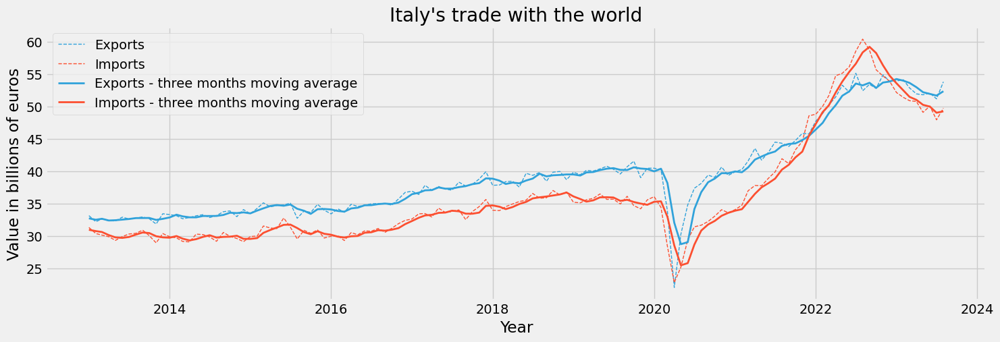

istatapi is a Python interface to discover and retrieve data from ISTAT API (The Italian National Institute of Statistics). The library is designed to explore ISTAT metadata and to retreive data in different formats. istatapi is built on top of ISTAT SDMX RESTful API.
Whether you are an existing organization, a curious individual or an academic researcher, istatapi aims to allow you to easily access ISTAT databases with just a few lines of code. The library implements functions to:
- Explore all available ISTAT datasets (dataflows in SDMX terminology)
- Search available datasets by keywords
- Retrieve information on a specific dataset like: the ID of the dataflow, the names and available values of the dimensions of the dataset, available filters.
- Get data of an available dataset in a pandas DataFrame, csv or json format.
Install
You can easily install the library by using the pip command:
pip install istatapi
Tutorial
First, let’s simply import the modules we need:
from istatapi import discovery, retrieval
import matplotlib.pyplot as pltWith istatapi we can search through all the available datasets by simply using the following function:
discovery.all_available()| df_id | version | df_description | df_structure_id | |
|---|---|---|---|---|
| 0 | 101_1015 | 1.3 | Crops | DCSP_COLTIVAZIONI |
| 1 | 101_1030 | 1.0 | PDO, PGI and TSG quality products | DCSP_DOPIGP |
| 2 | 101_1033 | 1.0 | slaughtering | DCSP_MACELLAZIONI |
| 3 | 101_1039 | 1.2 | Agritourism - municipalities | DCSP_AGRITURISMO_COM |
| 4 | 101_1077 | 1.0 | PDO, PGI and TSG products: operators - municipalities data | DCSP_DOPIGP_COM |
You can also search for a specific dataset (in this example, a dataset on imports), by doing:
discovery.search_dataset("import")| df_id | version | df_description | df_structure_id | |
|---|---|---|---|---|
| 10 | 101_962 | 1.0 | Livestock import export | DCSP_LIVESTIMPEXP |
| 47 | 139_176 | 1.0 | Import and export by country and commodity Nace 2007 | DCSP_COEIMPEX1 |
| 49 | 143_222 | 1.0 | Import price index - monthly data | DCSC_PREIMPIND |
To retrieve data from a specific dataset, we first need to create an instance of the DataSet class. We can use df_id, df_description or df_structure_id from the above DataFrame to tell to the DataSet class what dataset we want to retrieve. Here, we are going to use the df_id value. This may take a few seconds to load.
# initialize the dataset and get its dimensions
ds = discovery.DataSet(dataflow_identifier="139_176")We now want to see what variables are included in the dataset that we are analysing. With istatapi we can easily print its variables (“dimensions” in ISTAT terminology) and their description.
ds.dimensions_info()| dimension | dimension_ID | description | |
|---|---|---|---|
| 0 | FREQ | CL_FREQ | Frequency |
| 1 | MERCE_ATECO_2007 | CL_ATECO_2007_MERCE | Commodity Nace 2007 |
| 2 | PAESE_PARTNER | CL_ISO | Geopolitics |
| 3 | ITTER107 | CL_ITTER107 | Territory |
| 4 | TIPO_DATO | CL_TIPO_DATO12 | Data type 12 |
Now, each dimension can have a few possible values. istatapi provides a quick method to analyze these values and print their English descriptions.
dimension = "TIPO_DATO" #use "dimension" column from above
ds.get_dimension_values(dimension)| values_ids | values_description | |
|---|---|---|
| 0 | EV | export - value (euro) |
| 1 | TBV | trade balance - value (euro) |
| 2 | ISAV | import - seasonally adjusted value - world based model (millions of euro) |
| 3 | ESAV | export - seasonally adjusted value - world based model (millions of euro) |
| 4 | TBSAV | trade balance - seasonally adjusted value -world based model (millions of euro) |
| 5 | IV | import - value (euro) |
If we do not filter any of our variables, the data will just include all the possible values in the dataset. This could result in too much data that would slow our code and make it difficult to analyze. Thus, we need to filter our dataset. To do so, we can simply use the values_ids that we found using the function get_dimension_values in the cell above.
Note: Make sure to pass the names of the dimensions in lower case letters as arguments of the set_filter function. If you want to filter for multiple values, simply pass them as lists.
freq = "M" #monthly frequency
tipo_dato = ["ISAV", "ESAV"] #imports and exports seasonally adjusted data
paese_partner = "WORLD" #trade with all countries
ds.set_filters(freq = freq, tipo_dato = tipo_dato, paese_partner = paese_partner)Having set our filters, we can now finally retrieve the data by simply passing our DataSet instance to the function get_data. It will return a pandas DataFrame with all the data that we requested. The data will be already sorted by datetime
trade_df = retrieval.get_data(ds)
trade_df.head()| DATAFLOW | FREQ | MERCE_ATECO_2007 | PAESE_PARTNER | ITTER107 | TIPO_DATO | TIME_PERIOD | OBS_VALUE | BREAK | CONF_STATUS | OBS_PRE_BREAK | OBS_STATUS | BASE_PER | UNIT_MEAS | UNIT_MULT | METADATA_EN | METADATA_IT | |
|---|---|---|---|---|---|---|---|---|---|---|---|---|---|---|---|---|---|
| 0 | IT1:139_176(1.0) | M | 10 | WORLD | ITTOT | ESAV | 1993-01-01 | 10767 | NaN | NaN | NaN | NaN | NaN | NaN | NaN | NaN | NaN |
| 368 | IT1:139_176(1.0) | M | 10 | WORLD | ITTOT | ISAV | 1993-01-01 | 9226 | NaN | NaN | NaN | NaN | NaN | NaN | NaN | NaN | NaN |
| 372 | IT1:139_176(1.0) | M | 10 | WORLD | ITTOT | ISAV | 1993-02-01 | 10015 | NaN | NaN | NaN | NaN | NaN | NaN | NaN | NaN | NaN |
| 4 | IT1:139_176(1.0) | M | 10 | WORLD | ITTOT | ESAV | 1993-02-01 | 10681 | NaN | NaN | NaN | NaN | NaN | NaN | NaN | NaN | NaN |
| 373 | IT1:139_176(1.0) | M | 10 | WORLD | ITTOT | ISAV | 1993-03-01 | 9954 | NaN | NaN | NaN | NaN | NaN | NaN | NaN | NaN | NaN |
Now that we have our data, we can do whatever we want with it. For example, we can plot the data after having it cleaned up a bit. You are free to make your own analysis!
# set matplotlib themes
plt.style.use('fivethirtyeight')
plt.rcParams['figure.figsize'] = [16, 5]
#fiveThirtyEight palette
colors = ['#30a2da', '#fc4f30', '#e5ae38', '#6d904f', '#8b8b8b']
# calculate moving averages for the plot
trade_df["MA_3"] = trade_df.groupby("TIPO_DATO")["OBS_VALUE"].transform(
lambda x: x.rolling(window=3).mean()
)
#replace the "TIPO_DATO" column values with more meaningful labels
trade_df["TIPO_DATO"] = trade_df["TIPO_DATO"].replace(
{"ISAV": "Imports", "ESAV": "Exports"}
)
# Plot the data
after_2013 = trade_df["TIME_PERIOD"] >= "2013"
is_ESAV = trade_df["TIPO_DATO"] == "Exports"
is_ISAV = trade_df["TIPO_DATO"] == "Imports"
exports = trade_df[is_ESAV & after_2013].rename(columns={"OBS_VALUE": "Exports", "MA_3": "Exports - three months moving average"})
imports = trade_df[is_ISAV & after_2013].rename(columns={"OBS_VALUE": "Imports", "MA_3": "Imports - three months moving average"})
plt.plot(
"TIME_PERIOD",
"Exports",
data=exports,
marker="",
linestyle="dashed",
color = colors[0],
linewidth=1
)
plt.plot(
"TIME_PERIOD",
"Imports",
data=imports,
marker="",
linestyle="dashed",
color = colors[1],
linewidth=1
)
plt.plot(
"TIME_PERIOD",
"Exports - three months moving average",
data=exports,
color = colors[0],
linewidth=2
)
plt.plot(
"TIME_PERIOD",
"Imports - three months moving average",
data=imports,
marker="",
color = colors[1],
linewidth=2
)
# add a title
plt.title("Italy's trade with the world")
# add a label to the x axis
plt.xlabel("Year")
# turn y scale from millions to billions (divide by a 1000), and add a label
plt.ylabel("Value in billions of euros")
plt.gca().yaxis.set_major_formatter(plt.FuncFormatter(lambda x, loc: "{:,}".format(int(x/1000))))
plt.legend()
With just a few lines of code, we have been able to retrieve data from ISTAT and make a simple plot. This is just a simple example of what you can do with istatapi. You can find more examples in the _examples folder. Enjoy!